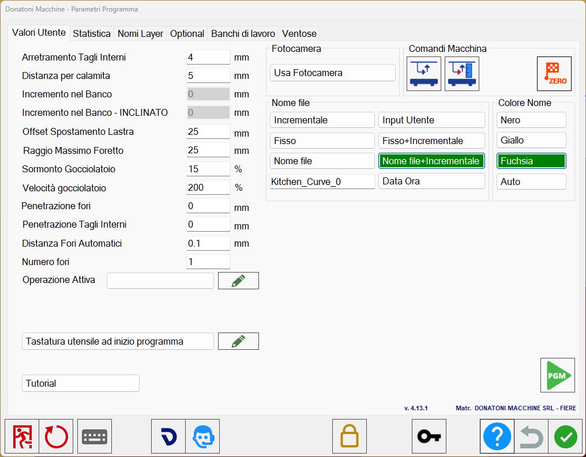

In this window, the operator can edit certain parameters relating to the working.

Left section
Receding of interior Cuts | Minimum disk approach distance to the piece for internal cuts. |
Distance on magnet | Distance between two pieces before the magnet is activated. |
Increase inside bench | Depth by which the tool penetrates into the workbench. |
Increase inside bench - miter | Depth by which the tool penetrates into the workbench. For isoparametric mode only. |
Offset Slab Move | Additional position for the Move function. |
Maximum core drill radius | For DXF import, the maximum radius for a circle to be imported as a hole. |
Overlay on Drip System | Drip system overlap percentage, from 99% to 0%. |
Drip System speed | Drip system speed percentage relative to the speed of standard cuts. |
Penetration holes | Sets the penetration of all holes; set to 0 for a through hole. |
Penetration Internal Cuts | Sets the penetration of all internal cuts; set to 0 for a through cut. |
Automatic holes distance | Indicates the distance between holes when inserting multiple holes. |
Holes number | Number of holes to use for holes at an angle. |
Operations
Active Operation | Allows a custom operation to be created for cuts. |
 | Custom operations |
Camera section
Use Camera | Enables use of the camera or allows the operator to select the image from a file. |
Machine commands section
Enable/disable position check | |
 | Acquire bench quote |
 | Axis homing |
File name section
The file name can be set using the text box at the bottom left in one of the following modes.
Incremental | Increments the ISO file name, 100, 101, 102… |
Input | The user can enter the file name. |
Fixed | Fixed ISO file name; enter the desired name in the adjacent field. |
Fixed _ Incremental | ISO file name in fixed incremental format, e.g. File_101. |
Time Data | ISO file name in date/time format, e.g. 20191206_080124. |
File name | The ISO file takes the name of the imported file (DXF or CSV). |
File Name _ Incremental | The ISO file takes the name of the imported file (DXF or CSV), with an incremental value added. |
Name colour section
Black | Black piece text. |
Yellow | Yellow piece text. |
Fuchsia | Fuchsia piece text. |
Auto | Automatically determines the best colour for the piece name |
Book Match colour section
Background | Controls the background colour of the Book Match function |
Name | Controls the name colour in the Book Match function |
Perimeter | Controls the perimeter colour in the Book Match function |
Other buttons
Check tool dimension at start of the program | When enabled, allows a probing cycle to be inserted at the start of the cutting program when switching to the cut management screen. |
| Custom operations |
Tutorial | Provides access to the Parametrix video tutorials. |
 | Enable/Disable PGM |
Unload all mode | This parameter has two possible values: |
Tutorial
This window contains tutorials showing how to use some Parametrix functions.
To view the desired video, press the corresponding row.